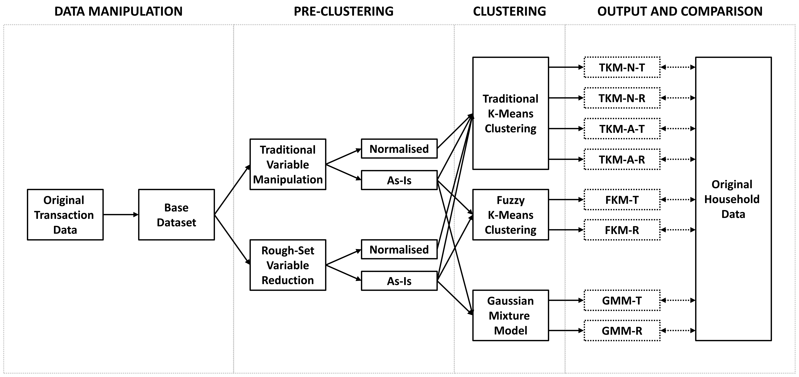
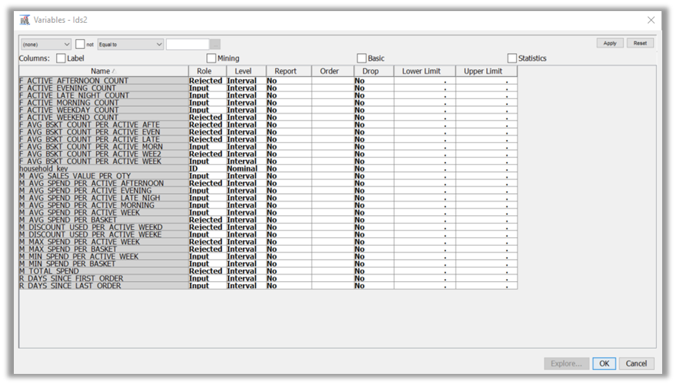
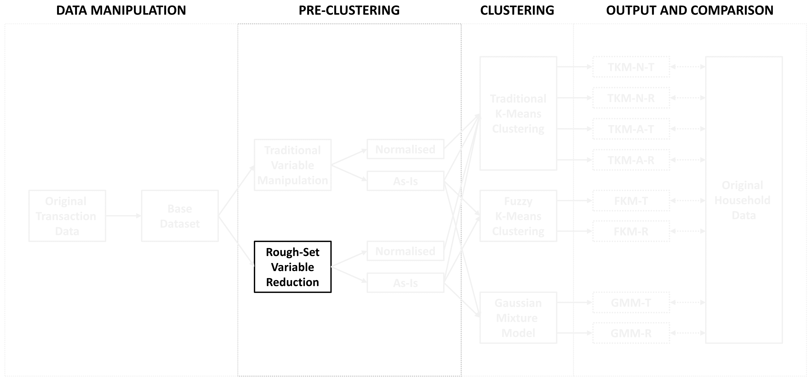
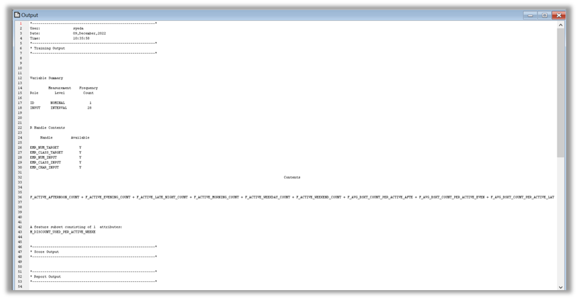
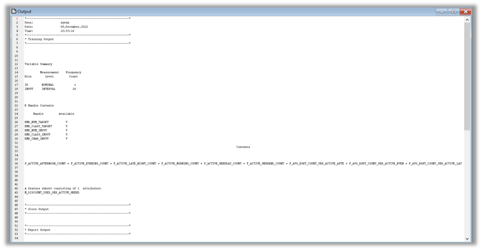
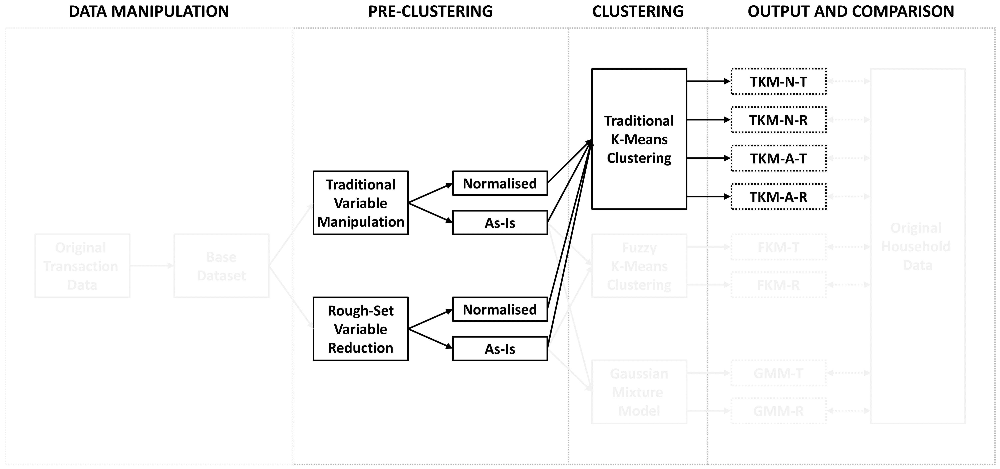
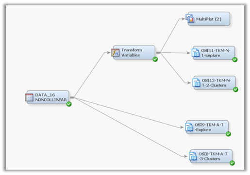
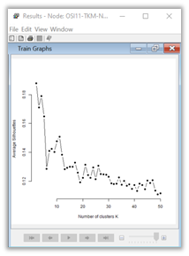

This project explores the use of Rough Set’s reduct algorithm on synthesizing a dataset down to its most significant variables, and its impact on clustering outcomes. This capstone project also explores and compares the use of non-traditional clustering algorithms such as fuzzy k-means and Gaussian mixture model, against the more traditional k-means clustering. These algorithms would be tested on a retail transaction dataset as an actual real-world application. These algorithms would also be executed primarily by R Code within a SAS Enterprise Miner 14.1 environment. Findings indicate positive contributions and clearer clustering outcomes, from the use of non-traditional algorithms such as fuzzy k-means, Gaussian mixture, and Rough Set’s reduct. It is hoped that these three algorithms would be a welcome addition to a data analyst’s ever burgeoning toolbox.
1. Introduction
Cluster analysis is an important data mining technique, which segregates data into separate groups, which themselves possess uniquely distinct attributes. Hierarchical and k-means clustering are two such established clustering methods, with differing approaches towards a similar clustering outcome. Since the introduction of both these established methods, data has grown increasingly complex and imprecise.
Though today’s technology allows ease of data recording more so than ever before, data remains disparately stored i.e., held in often unconnected sources with differing structures. Putting them together into a single homogenous dataset becomes a gargantuan task, and this is even before any proper analytical work is performed. The combined dataset invariably contains inherent inconsistencies (such as imprecisions or incompleteness), that traditional and established clustering methods are not designed for.
Two different approaches were adopted to resolve these shortcomings. The first approach was to address the limitations of existing clustering methods. Gaussian Mixture Model (GMM) was introduced to specifically address k-means and its limitations, namely its fundamental assumptions of sphericity, equal variance, and hard clustering. Given that its methodology remains akin to k-means, GMM’s application is similarly wide-ranging across diverse fields. That said, analysing such imperfect data was not limited to just tweaking existing clustering methods.
The other approach was to develop entirely new fields, capable of generating meaningful insights from inconsistent data. One novel research field was fuzzy set theory (Zadeh 1965). All objects are said to belong to all different sets, albeit to varying degrees of membership, similar to ‘soft’ clustering. Conversely, this theory also recognizes objects that have binary set membership ie. that they either belong to a set or not. This is similar to ‘hard’ clustering like k-means. With the success of fuzzy set theory in analysing imperfect data, another novel research field was introduced over a decade later that is equally adaptable to recognizing both soft and hard clustering.
Rough Set theory (Pawlak 1982) introduces the concept of approximating hard or crisp sets. These approximations are divided into two regions: the lower approximation (positive region) and the upper approximation (negative region). The former (lower approximation) is similar to ‘hard’ clustering, where the objects are unambiguously and positively assigned to a set. Conversely, the latter (upper approximation) recognizes objects that are possibly assigned to a set, similar to ‘soft’ clustering. As such, both fuzzy and rough sets achieve similar outcomes of identifying both ‘hard’ and ‘soft’ sets or clusters, through their own distinctive methodologies.
Whether it be Rough Set or fuzzy set theory, both novel research fields were created out of a need to analyse inconsistent data in a more robust way. This complementary nature has led to numerous works incorporating both theories together. Computationally efficient on managing uncertainty in large complex data, both theories have had major research and applications in machine learning, data mining and other domains (Pięta and Szmuc 2021). Despite their robust applications in a highly technical research field such as artificial intelligence (AI), there have been surprisingly little applications in a much less complex, real-world field such as customer segmentation.
Thus, this study aims to understand and compare clustering approaches, both established and novel, specifically on customer segmentation, to the eventual benefit of the everyday data analyst.
The flow of this capstone report starts off with its problem statement and objectives. It is then followed by a literature review of these topics. An explanation of the capstone’s six step approach is covered within the research design and methods and is then followed with an extensive analysis and results exploration, as well as a subsequent discussion section. This capstone then rounds off its study with its conclusions and contributions as well as the author’s milestones and reflections.
2. Problem Statement and Objectives
Using a real-world dataset, this study explored the impact of Rough Set’s reduct variable selection. Two different forms of dataset are fed into each clustering method: traditional variable manipulation (TVM) and the Rough Set-based variable reduction. TVM was completed during the progress report phase, while the Rough Set-based variable reduction has been expanded in this report.
This study also examined and compared the clustering outcome of k-means (both traditional and fuzzy) and GMM. The comparison would entail the following:
Detailed the different outcomes
Uncovered merits and shortcomings of each clustering methods
Suggested situations where each approach would excel
Lastly, given SAS scholarship’s requirements, this study used JMP Pro and SAS Enterprise Miner (EM) for data manipulation and clustering respectively. Given that these four algorithms (traditional k-means, fuzzy k-means, GMM and Rough Set) are not available within EM, this study explored the use of R and its statistical packages within EM’s environment.
The table below shows the clustering methods used on the differing dataset.
(A Breakdown of the Clustering Methods and Variable Selection Techniques Involved)
In summary, this study aims to understand whether either GMM, Rough Set-based variable reduction, fuzzy k-means, or all of them would be a welcomed complement to current established clustering methods such as k-means clustering.
3. Literature Review
Cormack (1971) explains that a traditional clustering approach assigns individual objects into initially unclear classes, where all entities within a class share similarities with one another. The converse is also true. Objects outside of their assigned classes are highly dissimilar to those within their respective classes. A well-regarded clustering methodology is the k-means clustering. Being an established non-hierarchical clustering approach, objects are partitioned such that the squared Euclidean distance between each object and the centroid of the class it resides in, is as small as the centroids of the other classes (Steinley 2006). Garla et al. (2012) and Steinley (2006) explains the iterative k-means algorithm in detail:
Specify the number of clusters or classes known as k. This number is chosen a priori ie. based on theoretical deduction.
Randomly select k cluster centres, or initial seeds in the data space, as defined by P-dimensional vectors \((S_{1}^{(k)},…, S_{P}^{(k)})\), for 1 ≤ k ≤ K
Allocate objects to clusters, where the squared Euclidean distance, \(d^2(i,k)\), between ith object and the kth seed vector, is at its minimum
Repeat steps 3. and 4. Above until convergence criterion is achieved i.e., the centroids do not change
3.1 Gaussian Mixture Model
Raykov et al. (2016) explains that k-means suffers from sphericity, outliers, and geometric closeness. Sphericity assumes that all clusters, within the dataset, are spherical in nature with the same radius. Conversely, given that k-means heavily relies on linear distance, any outliers that are unusually far away from the rest of the points within the cluster would impair the results of the k-means. Lastly, k-means implicitly assumes each cluster within the dataset has the same volume and fails to take into consideration clusters with differing geometric closeness and densities. These three limitations prevent k-means from clustering improper data in a meaningful way. To overcome this, this capstone is influenced by the work of Garla et al. (2012). There, a comparison was made between k-means, normal mixtures, and probabilistic-D clustering for a B2B segmentation study on customers’ perceptions. Given that normal mixtures model, otherwise known as Gaussian Mixture Model (GMM), is not a common clustering method, this capstone aims to explore this, on top of the traditional and fuzzy k-means.
Gaussian Mixture Model (GMM) was introduced to overcome the k-means assumptions of hard clustering, sphericity, outliers, and geometric closeness. It is also suited for an incomplete dataset (Melchior and Goulding 2018). Patel and Kushwaha (2020) denotes each Gaussian or Normal distribution as a continuous probability distribution as follows:
\(\sum\) is a D x D covariance matrix, describing the shape of the Gaussian
\(|\sum|\) denotes the determinant of \(\sum\)
Each dataset is deemed to contain several different Gaussian (normal) distributions on the same linear plane, with each distribution being regarded as one cluster:
K is the number of components or clusters in the mixture model
\(\pi_k\)π_k denotes the mixing coefficient, giving an estimate of the density of each Gaussian component
\(N(X|\mu_k,{\sum}k)\) denotes the Gaussian density as per (5), with mean \(\mu_k\), covariance \({\sum}_k\) and the mixing coefficient \(\pi_k\)
Unlike traditional k-means which assigns each object to only one cluster, GMM assigns each object a probability of how closely it fits to each distribution. It thus has a ‘fit’ score relating to each cluster and would naturally be included in the cluster with the highest score. While it’s akin to a k-means clustering method in that it uses the mean values, GMM goes one step further by incorporating variance into the methodology. This allows it to identify and separate clusters that are close to each other, overcoming some of its limitations.
3.2 Fuzzy Clustering
In the traditional deterministic form of k-means clustering, it is impossible to assess the impact of the imprecise data (Chaudhuri and Bhowmik 1998). Given that k-means is a hard clustering methodology, objects are either assigned to a particular set or not. This becomes increasingly difficult with imprecise data, where there is every possibility that an object may not just belong to a single set. For k-means to adopt a soft clustering approach, it would need to be paired with an additional concept. As such, there have been numerous studies to introduce fuzzy logic into the traditional k-means clustering.
Building on classical set theory where objects in a set either belong to a set or otherwise, Zadeh (1965) theorised fuzzy sets, where these same objects have degrees of membership to a set. Granted imprecision within a data space, Bezdek (1981) explains the use of fuzzy k-means clustering to ‘soft’ classify its observations into k clusters through a minimisation algorithm. This allows the traditional k-means clustering method to adopt a more flexible approach, especially where imprecise data would generally not fit into a ‘hard’ cluster. Steinley (2006) expresses the fuzzy k-means as follows:
\(w_{ik}\) indicates membership values or the degree to which object i belongs to cluster \(k\).
all \(w_{ik}\) sums to unity or 1
r is a hyper-parameter that controls the fuzziness of the solution and is always greater than or equal to 1. The higher the r value is, the ‘fuzzier’ the solution
\(d^2(i,k)\) is the squared Euclidean distance between the ith point and the kth seed vector
On reflection, while k-means clustering also tries to minimise (4), its \(w_{ik}\) or membership values are only binary in nature. Separately, while r takes values between 1 and \(\infty\) ie. \(r\in \{1, ∞\}\), a larger r results in fuzzier clusters. In the case of m → 1, the membership, \(w_{ik}\), converses to either 0 or 1, and Fuzzy k-means would match the behaviour of traditional k-means.
3.3 Rough Set Theory
This study thus far has considered traditional k-means, fuzzy k-means and GMM as part of the clustering concepts to explore. To efficiently discover clusters, feature selection is an important pre-clustering process. The task of finding important and significant variables within the unsupervised dataset allows for highly efficient processing, without eroding or compromising the overall quality of the dataset. A common feature selection would be to identify non-collinear variables for subsequent k-means clustering. As an alternative feature selection, this capstone explored Rough Set theory’s reduct algorithm.
The Rough Set theory begins by separating these same objects into indiscernible classes, which can then be constructed as clusters themselves (Nayak et al. 2012). Dagdia et al. (2020) expounds the theory by starting with a tuple \(S=(U,A)\), where \(U=\{u_1,u_2,…,u_N\}\) is a non-empty finite set of N objects aptly named as universe and A is a non-empty set of \((n+k)\)attributes. Feature set \(A=C \cup D\) can broken down to two subsets: conditional feature set, \(C=\{a_1,a_2,…,a_n\}\), is made up of n conditional attributes or predictors, while decision attribute, \(D=\{d_1,d_2,…,d_k\}\), is made up of k decision attributes or output variables. Each feature \(a \in A\) is defined with a set of possible values \(V_a\), or known as the domain of a. For each non-empty subset of attributes \(P \subset C\), a binary relation named P-indiscernibility relation, is a key tenet of the Rough Set theory and is illustrated as follows:
\[
IND(P) = \{(u_1,u_2) \in U x U: \forall_a \in P, a(u_1) = a(U_2) \}
\]
( 7 )
where
\(a(u_i)\) refers to the value of attribute a for the instance \(u_i\)
If \((u_1,u_2)∈IND(P)\), then \(u_1\) is indiscernible from \(u_2\) by the attributes P. The induced set of equivalence classes \([u]p\) ,where \(u \in U\), separates U into different parts or blocks denoted as U/P. The Rough Set theory approximates a target set of objects \(X \subseteq U\) using the equivalence classes induced using P as follows:
\(\overline{P}(X)\) denotes the P-upper approximations of X, or positively and possibly assigned to set X
The difference between the two approximations is called the boundary region and is made up of the set of instances that are not positively, but possibly classified in a certain way. X is said to be a crisp set if the boundary region is an empty set where \(\underline{P} (X)= \overline{P}(X)\). Failure to meet this condition would yield X as a rough set.
A dependency measure is defined to compare subsets of attributes. For example, the dependency measure of an attribute subset Q on another attribute subset P is given as:
\[
_{\gamma P}(Q)=\frac{|POS_P(Q)|}{|U|}
\]
( 10 )
where
\(0≤ _{\gamma P} (Q)≤1\), \(\cup\) denotes the union operation, \(||\) denotes the set cardinality, and \(POS_P (Q)\) is defined as:
\(POS_P(Q)\) is the positive region of subset Q in relation to subset P, and is the set of all objects of U that can be uniquely classified to blocks of the partition \([u]_Q\), by means of P. As \(_{\gamma P}(Q)\) nears to 1, the greater Q depends on P.
The additional benefit of Rough Set theory is the reduct concept. It is the ability to reduce the number of attributes that objects possess in such a way that it remains distinguishable as before. A subset \(R\subseteq C\) is considered a reduct of C where:
\[
_{\gamma R}(D)=_{\gamma C}(D)
\]
( 12 )
and there is no \(R'\subseteq R\) such that \(_{\gamma R}(D)=_{\gamma C}(D)\).
These reduct concept, distilling only ‘significant’ attributes, remain a vital part of the cluster generation. Recent research applications of Rough Set theory mainly focus on attribute reduction, rule acquisition and intelligent algorithm (Zhang, Xie, and Wang 2016). Conversely, clustering-specific Rough Set-based research has been few. It was this capstone’s initial direction to venture into this somewhat uncharted field. Upadhyaya, Arora, and Jain (2008) and Singh and Mandal (2017) applied rough set’s reduct algorithm on the attributes within each cluster, post clustering, to reduce each cluster’s insignificant attributes and retain its significant attributes. With this method, each cluster would retain attributes pertinent to its unique cluster characteristics. While this capstone acknowledges this reduct approach as a possible direction to take, nonetheless this capstone’s eventual direction slightly differs. Rather than incorporate the reduct algorithm post clustering, this capstone aims to examine the effects of incorporating a reduct algorithm pre-clustering. By comparing a ‘normal’ dataset with another dataset post reduct, this capstone aims to examine and compare its effects on cluster accuracy.
4. Research Design and Methods
This study’s approach are broadly classified into the following six sequential steps, of which steps 3 to 6 are encapsulated in Figure 1 below.
Overall Intent of Study
Original Data Overview and Table Selection
Data Manipulation
Pre-Clustering
Employing Relevant Clustering Methods
Clustering Result Comparison
Figure 1 below shows the workflow steps beginning from data manipulation to pre-clustering techniques to actual clustering applications, before finally comparing the cluster output against its original household data.

Figure 1: Capstone Workflow
To add, the completion of steps 1 to 3 i.e., overall intent of study, original data overview and table selection as well as data manipulation were covered in the earlier progress report. At the same time, the traditional variable manipulation part of step 4 was similarly completed. Excluding the household ID variable, this traditional variable manipulation part identified 16 non-collinear variables from the overall 28 variables as per Figure 2. These non-collinear variables are crucial assumptions within the k-means algorithm.

Figure 2: 16 Non-Collinear Variables Kept as Inputs For k-Means; Rest Are Rejected
Thus, this final report would continue from the Rough Set variable reduction part of step 4.

Figure 3: Capstone Workflow with emphasis on current step
4.1 Pre-Clustering (Rough Set Variable Reduction)
This sub-section implements Rough Set’s reduct feature selection algorithm onto the base dataset. Though Rough Set algorithm exists within a multitude of programming language packages (R, C++, and Java) (Riza et al. 2014), Enterprise Miner does not include Rough Set reduct within its standard software. As a workaround, Enterprise Miner has an Open-Source Integration (OSI) Node that allows for both R and Python scripts to run within the EM environment. Since Rough Set already exists as an R package, using this node allows for Rough Set to be run within EM. Similarly, R packages of k-means, fuzzy k-means and Gaussian Mixture Models algorithms would also be executed with the Open-Source Integration node in similar fashion.
To ensure successful R integration with EM, compatibility of both versions need to be carefully considered. This capstone uses EM version 14.1. As such, SAS recommend 64-Bit R versions between 2.13.0 and 3.2.5. At the time of this capstone, the latest stable R version is 4.2.2. Since EM version 14.1 only recognizes R version 3.2.5 and nothing later, it must be said that certain R packages, considered useful to this capstone, may have limited usage on this earlier R version, or may even find itself completely unusable. Nonetheless, it is this capstone’s intention to find workable alternatives to ultimately deliver meaningful analysis and insights. Lastly, for housekeeping purposes and to ensure a streamlined and coherent report, all R codes within this capstone will be included in the appendix.
As seen in Figure 4 below, the Open-Source Integration Node is attached to the Data_All Node containing the base dataset of 28 input variables and 1 ID variable. The Rough Set reduct R code, using the RoughSets R package, is then entered within the Code Editor of the OSI Node. The Rough Set reduct R code used within this node closely follows Riza et al. (2014).
Figure 4: 16 Attaching Open-Source Integration Node to Data_All Node
The base dataset is first converted as a decision table. Unlike R’s usual dataframe or tibble type, a decision table has attribute descriptions, types of attributes and an index of the decision attribute. The household_ID is classified as an index of the decision attribute, with a nominal property. As a pre-processing step, this decision table is then discretized or converted from real-valued attributes into nominal attributes. This step maintains the discernibility between objects in information systems. Of the many different discretization approaches, there is one option for either global (discretizing values over the whole continuous attribute) or local (discretizing values over localized regions). @Riza et al. (2014) used global discretization, and thus this capstone followed suit. The eventual discretized values are then applied back to the decision table to generate a new decision table. Though there are other methods (quickreduct.rst, quickreduct.frst), feature selection is performed using the greedy.heuristic.superreduct method. The R code detailing this whole Rough Set reduct process is included in Appendix 5, and 6.
Figure 5 shows the Rough Set reduct output. Out of 28 possible input variables to choose from, the R code within the OSI Node chose only one input variable: M_DISCOUNT_USED_PER_ACTIVE_WEEKEND. This meant that the amount of discounts on an active weekend was THE attribute that is akin to the entire set of shopping consumer behaviour attributes.

Figure 5: Rough Set Reduct Output from Data_All
Unfortunately, given that clustering algorithms require a minimum of two variables, at least one other input is required. To meet this requirement, this capstone then removed the ‘M_DISCOUNT_USED_PER_ACTIVE_WEEKEND’ input variable from the Data_All Node. Since the OSI Node takes in the whole data node regardless of rejected variables, filtering out the ‘M_DISCOUNT_USED_PER_ACTIVE_WEEKEND’ input variable would need to be done within the OSI Node.
Figure 6: 16 Attaching Open-Source Integration Node (Removed One Input and Redid Reduct) to Data_All Node
Figure 6 shows the second run of Rough Set reduct output. Out of 27 possible input variables to choose from, the R code within the OSI Node chose only one input variable as before. This time, the input variable ‘M_DISCOUNT_USED_PER_ACTIVE_WEEKDAY’ was chosen. Thus, the reduct dataset (originally from the base dataset) would now comprise of one ID variable (household_ID), and two input variables (M_DISCOUNT_USED_PER_ACTIVE_WEEKDAY and M_DISCOUNT_USED_PER_ACTIVE_WEEKEND).

Figure 7: Rough Set Reduct Output from Data_All(Excluding M_DISCOUNT_USED_PER_ACTIVE_WEEKEND)
As mentioned in the progress report, four out of the eight clustering outputs are generated from k-means clustering. The outputs differ due to:
Type of Dataset Used:
16 non-collinear input variables and 1 ID variable
2 Rough Set reduct variables and 1 ID variable
Whether dataset was normalized (using the Transform Variables Node) before k-means clustering was performed

Figure 8: Capstone Workflow with emphasis on current step
It’s worth noting that since k-means is a distance-based algorithm, its input variables need to be scaled in a similar fashion. This scaling will be done in the R code. This scale function, already within base R, centres and scales the values, using either standard deviation or root mean square.
Separately, the clustering algorithm in the Cluster Node within SAS EM is closer to hierarchical clustering, than k-means clustering. The following details were lifted from SAS EM 14.1’s Reference Help, with emphasis on the hierarchical clustering.
::: {.grid .style=“background-color: #F2F2F2”} “The Automatic setting (default) configures SAS Enterprise Miner to automatically determine the optimum number of clusters to create.
When the Automatic setting is selected, the value in the Maximum Number of Clusters property in the Number of Clusters section is not used to set the maximum number of clusters. Instead, SAS Enterprise Miner first makes a preliminary clustering pass, beginning with the number of clusters that is specified as the Preliminary Maximum value in the Selection Criterion properties.
After the preliminary pass completes, the multivariate means of the clusters are used as inputs for a second pass that uses agglomerative, hierarchical algorithms to combine and reduce the number of clusters. Then, the smallest number of clusters that meets all four of the following criteria is selected.” :::
Since k-means clustering is not found within SAS EM, similar to Rough Set, this section will focus on using R code within OSI to perform k-means clustering. R already has k-means clustering built into its base stats package. To determine the optimal number of k clusters, this capstone would use the silhouette coefficient, with values between -1 and +1. It is a measure of how similar a data-point is within-cluster (cohesion), compared to other clusters (separation). Rousseeuw (1987) first defines a value of s(i) in the case of dissimilarities for object i. Object i is then assigned to cluster A. When cluster A has other objects apart from i, the following can be computed:
a(i) = average dissimilarity distance of i to all other objects within cluster A
( 13 )
Considering another cluster C, which is different from cluster A, the following can be computed:
d(i, C) = average dissimilarity distance of i to all objects of cluster C
( 14 )
After computing d(i, C) for all clusters \(C ≠ A\), the smallest of these numbers are then selected, and denoted by:
b(i) = minimum d(i, C), where\(C ≠ A\)
( 15 )
Thus, the number s(i) is obtained by combining a(i) and b(i) as follows:
A silhouette coefficient close to +1 shows that the object i has been assigned to an appropriate cluster, while a silhouette coefficient close to -1 shows that the same object has been misclassified to its current cluster. A silhouette coefficient close to zero would mean that object i lies equally far from two clusters.
This section covers both the TKM-N-T and TKM-A-T outputs, using the dataset with 16 non-collinear input variables and one ID variable, as shown in the EM diagram below.

Figure 9: EM Diagram for TKM-N-T and TKM-A-T outputs (Using 16 non-collinear inputs and 1 ID variable)
TKM-N-T (Traditional k-means clustering on normalized form of 16 non-collinear inputs) First, the optimal number of clusters needs to be computed. Information on the transformation of these 16 non-collinear inputs, within the Transform Variables Node, is included in Appendix 3. These are then ingested into the OSI Node called ‘OSI11-TKM-N-T-Explore.’ The number 12 here refers to the node number within the EM Workspace and allows for ease of retrieval of .csv and plot files. Setting the seed value to 1234, and then calling the ‘cluster’ and ‘purrr’ packages, a function to record the silhouette index of a particular cluster k is created, and then looped through cluster counts 2 to 50. This silhouette index is then plotted within EM, as seen below.

Figure 10: Silhouette Index for TKM-N-T output
The silhouette index starts out strongest at k = 2, and then goes downwards sharply by k = 6, before gradually decreasing by k = 50. It’s worth noting that the silhouette index within the graph is closer to zero than to 1. This might mean that the objects within the dataset are more evenly spread out, with little cluster concentrations. For now, we will continue to regard k = 2 as its most optimized cluster count.
Another OSI node, called ‘OSI12-TKM-N-T-2-Clusters,’ is now attached to the same Transform Variable Node. This time, instead of exploring, we will generate the k = 2 cluster output. Apart from the same R code above, a plot is created to compare the histograms of each cluster against overall for all variables. Analysis of these results will be covered in a later section.
Chaudhuri, B. B, and P. R Bhowmik. 1998. “An Approach of Clustering Data with Noisy or Imprecise Feature Measurement.”Pattern Recognition Letters. https://doi.org/10.1016/s0167-8655(98)00112-3.
Cormack, R. M. 1971. “A Review of Classification.”Journal of the Royal Statistical Society. Series A (General). https://doi.org/10.2307/2344237.
Dagdia, Zaineb Chelly, Christine Zarges, Gaël Beck, and Mustapha Lebbah. 2020. “A Scalable and Effective Rough Set Theory-Based Approach for Big Data Pre-Processing.”Knowledge and Information Systems. https://doi.org/10.1007/s10115-020-01467-y.
Garla, Satish, Goutam Chakraborty, G Gaeth, and US Iowa. 2012. “Comparison of k-Means, Normal Mixtures and Probabilistic-d Clustering for B2b Segmentation Using Customers’ Perceptions.” In SAS Global Forum 2012-Data Mining and Text Analytics.
Melchior, P., and A. D. Goulding. 2018. “Filling the Gaps: Gaussian Mixture Models from Noisy, Truncated or Incomplete Samples.”Astronomy and Computing. https://doi.org/10.1016/j.ascom.2018.09.013.
Nayak, Rudra Kalyan, Debahuti Mishra, Kailash Shaw, and Sashikala Mishra. 2012. “Rough Set Based Attribute Clustering for Sample Classification of Gene Expression Data.”Procedia Engineering. https://doi.org/10.1016/j.proeng.2012.06.219.
Patel, Eva, and Dharmender Singh Kushwaha. 2020. “Clustering Cloud Workloads: K-Means Vs Gaussian Mixture Model.”Procedia Computer Science. https://doi.org/10.1016/j.procs.2020.04.017.
Pięta, Piotr, and Tomasz Szmuc. 2021. “Applications of Rough Sets in Big Data Analysis: An Overview.”International Journal of Applied Mathematics and Computer Science 31 (4): 659–83. https://doi.org/doi:10.34768/amcs-2021-0046.
Raykov, Yordan P., Alexis Boukouvalas, Fahd Baig, and Max A. Little. 2016. “What to Do When k-Means Clustering Fails: A Simple yet Principled Alternative Algorithm.”PLOS ONE. https://doi.org/10.1371/journal.pone.0162259.
Riza, Lala Septem, Andrzej Janusz, Christoph Bergmeir, Chris Cornelis, Francisco Herrera, Dominik Śle¸zak, and José Manuel Benítez. 2014. “Implementing Algorithms of Rough Set Theory and Fuzzy Rough Set Theory in the r Package ‘RoughSets’.”Information Sciences. https://doi.org/10.1016/j.ins.2014.07.029.
Rousseeuw, Peter J. 1987. “Silhouettes: A Graphical Aid to the Interpretation and Validation of Cluster Analysis.”Journal of Computational and Applied Mathematics. https://doi.org/10.1016/0377-0427(87)90125-7.
Singh, Girish Kumar, and Shrabanti Mandal. 2017. “Cluster Analysis Using Rough Set Theory.”Journal of Informatics & Mathematical Sciences 9 (3).
Steinley, Douglas. 2006. “K‐means Clustering: A Half‐century Synthesis.”British Journal of Mathematical and Statistical Psychology. https://doi.org/10.1348/000711005x48266.
Upadhyaya, Shuchita, Alka Arora, and Rajni Jain. 2008. “DERIVING CLUSTER KNOWLEDGE USING ROUGH SET THEORY.”Journal of Theoretical & Applied Information Technology 4 (8).
Zhang, Qinghua, Qin Xie, and Guoyin Wang. 2016. “A Survey on Rough Set Theory and Its Applications.”CAAI Transactions on Intelligence Technology. https://doi.org/10.1016/j.trit.2016.11.001.